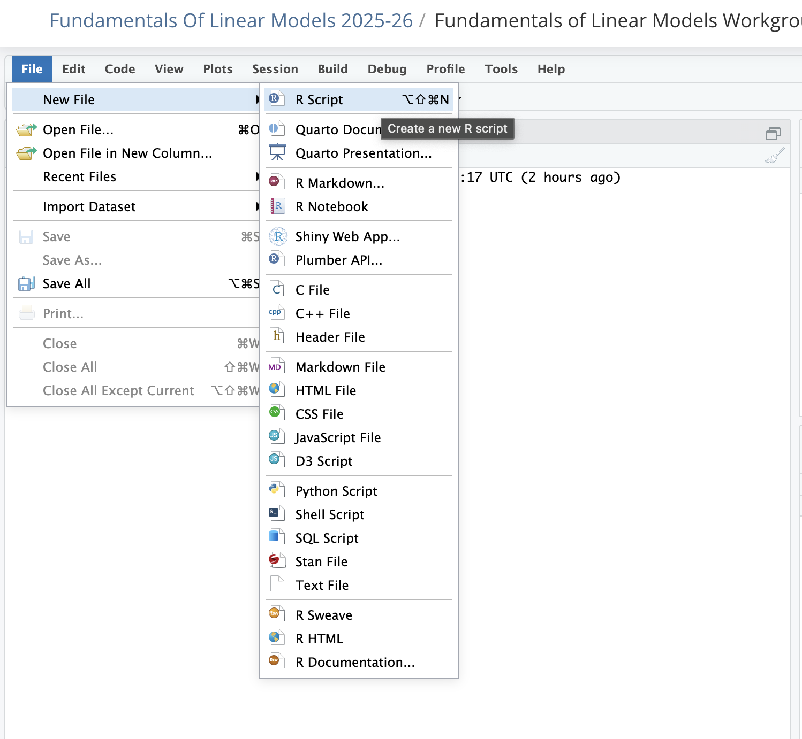
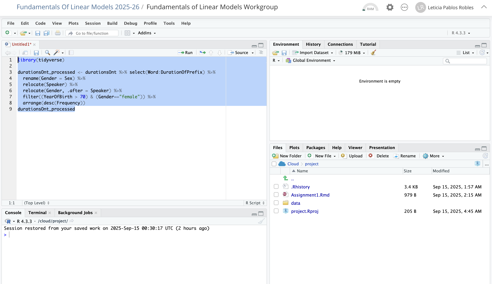
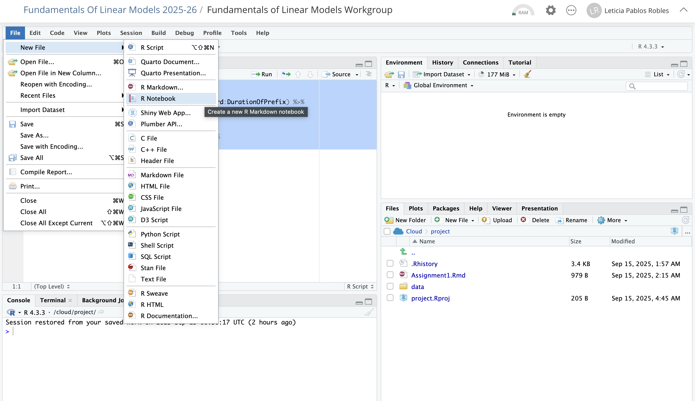
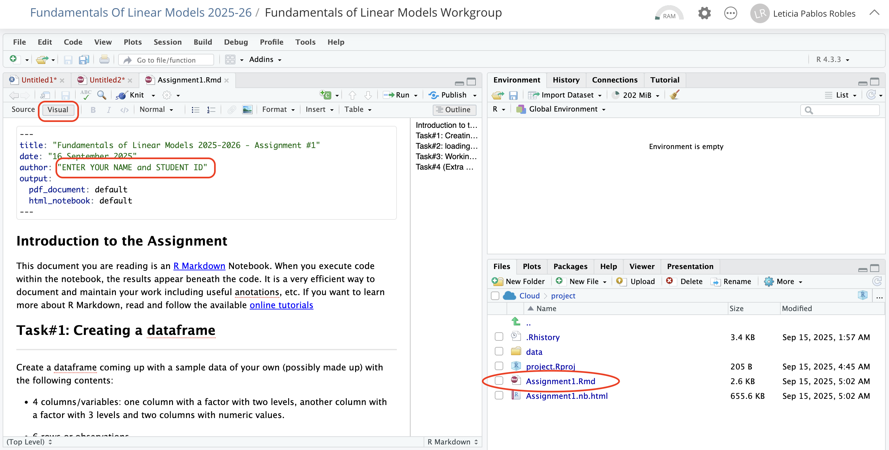
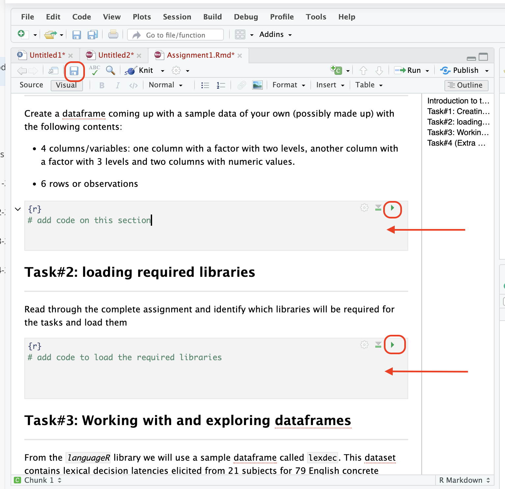
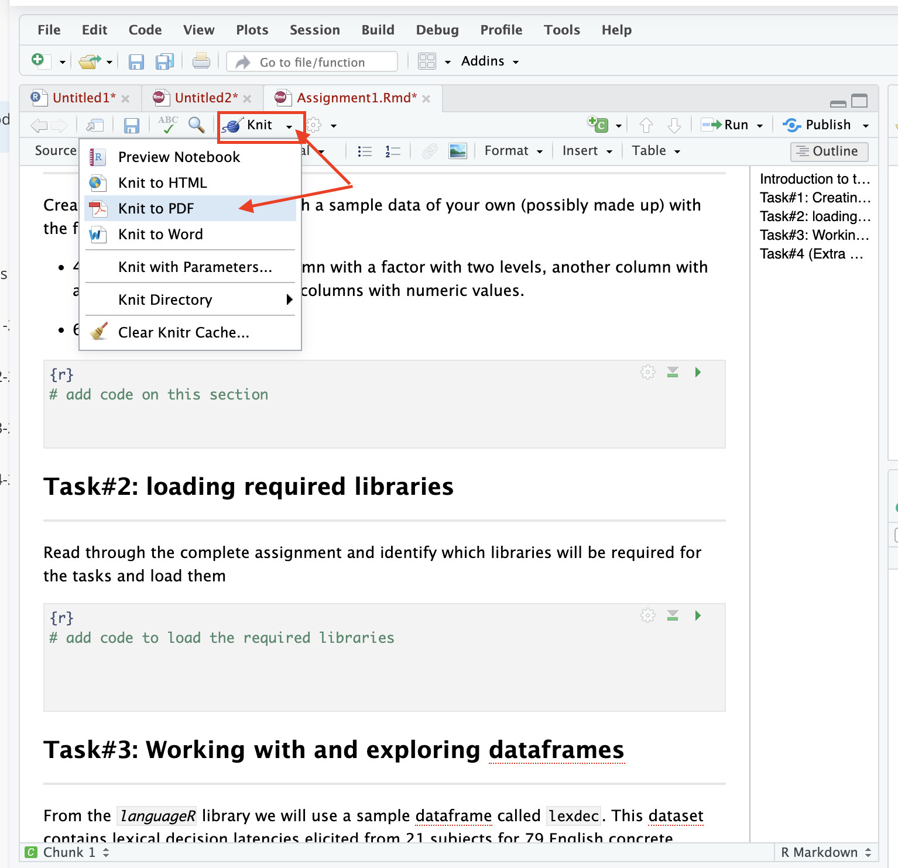

6 Reproducible research using Scripts and Notebooks
Up to now we have described the usage of R and RStudio as an interactive data analysis environment where we introduce commands and get outputs on the Console.
An important part of research and data analysis is being able to reproduce the analysis and work you produce and report.
In order to that, reproducible research includes:
raw data collected
code, including versions of all packages used for the analysis
documentation of the steps and process.
6.1 R Scripts
Scripts are used to collect the commands and steps used in a data analysis. In the R language, a script is a text file with commands saved with extension .R.
To create a script, select File -> New File -> R Script

This will open a file in the Editor where you can type a series of commands and comments. Comments are lines starting with # .
You can execute the code you want to run highlighting it and pressing Ctrl + Enter (Windows) or Cmd + Enter (Mac) or with the Green “Run” button on the top right of the Editor window.

6.2 R Markdown and Notebooks
An alternative to scripts are Notebooks, which are a powerful way of documenting work by producing documents that mix plain text and code.
Notebooks include chunks of code that can be executed and the output displayed and included in the document, together with textual input formatted using R Markdown language. In fact the current workbook is written using this approach.
A full description of R Markdown is beyond the scope of this course, but also not required to follow the content and exercises. In the section below a basic introduction is given to create a Notebook, use the Visual editor and generate PDF output to hand-in your assignments.
6.2.1 Notebook instructions
Beware that the environment of a Notebook is not the same as the R session environment!
To create a notebook in R Markdown, you can select File -> New File -> R Notebook

To show the capabilities of the Notebook, we will look at the assignments to be delivered:
Open the file
Assignment1.Rmdby clicking on the file on the name in the file tab.If not active, select “Visual” in the edit mode on the upper left.
Enter your name and Student ID in the author field.

Enter the code to answer each of the questions in the relevant code section, that appear in grey and with a {r} marking.
After entering the code, run it pressing the green arrow on the top right corner of the code section
Remember to save from time to time!

When you are ready to hand in your assignment you can generate a PDF to upload in Brightspace. This is the procedure to do it:
Click on the small arrow next to the Knit button (see figure below).
Select “Knit to PDF”
Save the PDF file generated somewhere in your drive or computer.
Upload it to Brightspace on the relevant assignment.

6.3 Additional Reading
If you are interested into knowing more on the capabilities of R notebooks, you can use this resources.
This material is for your own development but it is not required for the course. I add it here as additional information in case you need to use it in your own research